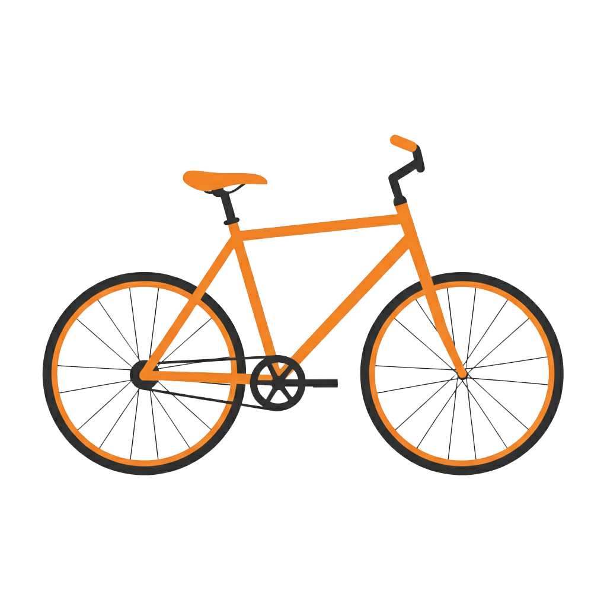
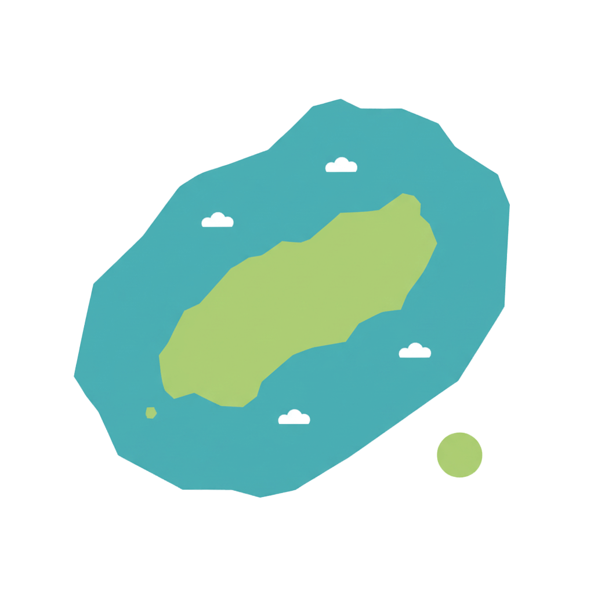
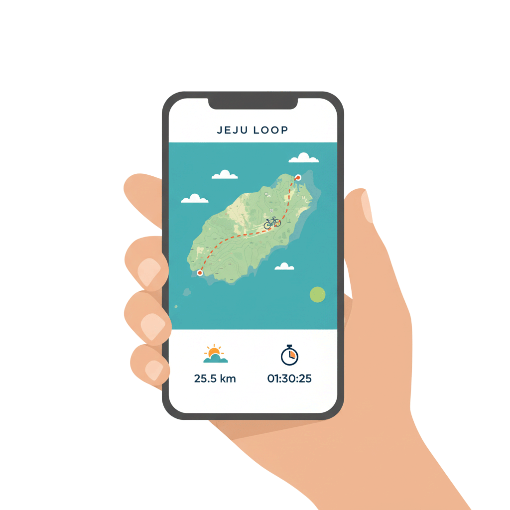

제주의 바람 따라,
시작되는 당신의 여정
JEJU LOOP는 당신의 자전거 여행을
계획하고, 기록하며, 추억으로 남겨줍니다.
바람이 머물다 간 길 위에서,
당신의 페달이 제주를 그립니다.
오늘의 속도로, 나만의 여행을 시작하세요.


JEJU LOOP는 당신의 자전거 여행을
계획하고, 기록하며, 추억으로 남겨줍니다.
바람이 머물다 간 길 위에서,
당신의 페달이 제주를 그립니다.
오늘의 속도로, 나만의 여행을 시작하세요.


여행 기간, 체력, 숙소 스타일을 입력하면
AI가 당신만의 코스를 만들어드려요.
감귤향 가득한 길목부터 숨겨진 해안도로까지,
AI가 당신의 발걸음을 이어줍니다.
제주를 가장 나답게 여행하는 방법.


주행 기록, 사진, 루트가 자동으로 모여
나만의 제주 여행 다이어리가 완성됩니다.
사진 한 장, 길 하나도 놓치지 않도록.
당신의 여정이 자동으로 기억됩니다.
다시 보고 싶은 순간, 언제든 돌아올 수 있어요.
